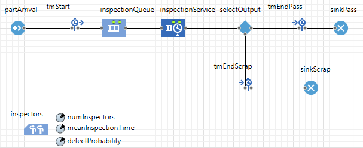
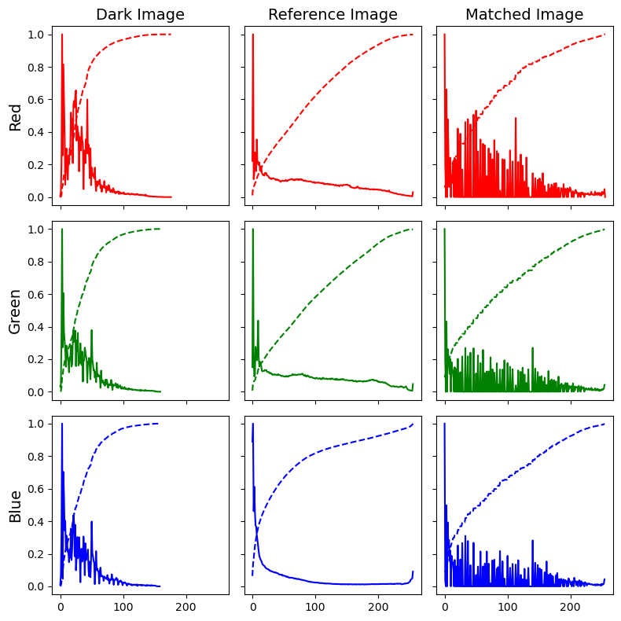

Engineering Projects & Applications
Systems Engineering applications across automation, computer vision, predictive analytics, and digital twins. Each project highlights architectural design, interface integration, code implementations, and measurable industrial impact.
Discrete-Event Digital Twin for Quality Control & Bottleneck Analysis in Automated Assembly Lines
System Context: This project models a multi-station automated quality control line (Cutting → Assembly → Inspection) operating under dynamic production constraints. The system simulates real-world manufacturing disturbances, including stochastic machine breakdowns (MTBF/MTTR), random process execution times, gauge measurement noise, and a closed-loop rework/scrap routing logic for defective components
My Systems Contribution:
- Discrete-Event Digital Twin Execution: Built an object-oriented Python discrete-event simulation using simpy to mirror real-time part flow across multi-station production constraints during an 8-hour operational shift.
- Disturbance & Reliability Modeling: Programmed continuous breakdown processes using exponential distributions (expovariate) for MTBF/MTTR downtime interruptions alongside Gaussian variation (gauss) for cycle times and measurement noise
- Quality & Closed-Loop Rework Logic: Implemented an automated inspection classification engine based on upper and lower specification limits (LSL = 9.9, USL = 10.1) to dynamically route parts into First Pass Yield (FPY), rework loops back to Assembly, or final scrap.
- Production KPI Analytics Pipeline: Automated calculations for station utilization, queue depth tracking, throughput (good parts/hr), Overall Equipment Effectiveness (OEE), scrap rates, and system bottleneck detection
V&V & Impact: Verified model stability by incorporating a 30-minute warmup phase (WARMUP_MIN) to eliminate transient startup bias, ensuring accurate steady-state metric calculations. Validated line efficiency by analyzing station utilization and queue lengths, enabling precise identification of the primary bottleneck station. The simulation quantified the impact of machine availability and rework limits on overall throughput and OEE, providing a predictive decision-support tool for optimizing shop-floor capacity without physical line disruption
View Repository
# Continuous Exponential MTBF/MTTR Process
def breakdown_process(env, station_name):
mtbf = STATIONS[station_name]["mtbf"]
mttr = STATIONS[station_name]["mttr"]
if mtbf >= 9999: return
while True:
time_to_failure = random.expovariate(1.0 / mtbf)
yield env.timeout(time_to_failure)
DOWN[station_name] = True
yield env.timeout(mttr)
DOWN[station_name] = False Queue Dynamics & Bottleneck Plot
Queue Dynamics & Bottleneck Plot
Extended LTspice Simulation & Dynamic Response Analysis

System Context: This project extension evaluates the dynamic response and control stability of an instrumentation amplifier front-end cascaded into a second-order active Sallen-Key low-pass filter network. By varying the feedback gain parameter (K), the system's transient overshoot, natural frequency, and damping characteristics are systematically characterized across both time-domain step inputs and frequency-domain AC sweeps.
My Systems Contribution:
- Physical & Virtual Twin Development: Built a physical test rig using an oscilloscope and signal generator alongside a high-fidelity LTspice simulation model to replicate physical dynamic responses
- Control Parameter Calibration: Analyzed physical and virtual step responses across variable feedback conditions ($K = 0\ \Omega$ to $2.062\text{ k}\Omega$) to extract critical dynamic metrics, including damping ratio ($\zeta = 0.204$) and natural frequency ($\omega_n = 3683\text{ rad/s}$).
- Frequency Domain & Noise Filtering: Mapped system frequency response via Bode plots ($1\text{ Hz} - 500\text{ kHz}$) to define low-pass filter boundaries and eliminate high-frequency signal interference.
V&V & Impact: Validated the virtual simulation model against physical hardware test data, proving that adjusting internal loop gain ($K$) eliminates transient overshoot ($M_p = 51.94\%$ down to $0\%$). This confirmed model fidelity for predicting control loop stability and preventing mechanical/electrical overshoot in automated manufacturing hardware
View Repository
Sensor Pulse Source & Simulation Setup
V1 -288 448 R0 PULSE(0 50m 0 1n 1n 5m 10m) Rser=50
V2 400 464 R0 14
V3 528 464 R0 -14
* Active Component Network Configuration
SYMATTR InstName R2 / Value 150K
SYMATTR InstName R6 / Value 2.2K
SYMATTR InstName C1 / Value 22n
.tran 10m Queue Dynamics & Bottleneck Plot
Queue Dynamics & Bottleneck Plot
Active Low-Pass Filtering & Frequency Response SPICE Analysis

System Context: Validation and hardware-in-the-loop dynamic modeling of a second-order active filter control system. The physical test rig processes incoming step and sinusoidal excitation signals via an op-amp circuit, providing a benchmark to test signal conditioning and dynamic control loops used in industrial sensor and actuator subsystems.
My Systems Contribution:
- Physical Rig Setup & Test Execution: Assembled the analog operational amplifier circuit, applied step and sinusoidal signal excitation via a wave generator, and captured dual-channel oscilloscope traces using precision cursors (x_1, x_2, y_1, y_2) to measure phase shift (Δ x), rise time, and peak overshoot.
- Virtual Twin Simulation: Built a behavioral simulation model in LTspice incorporating .tran 30m transient analysis and .ac dec 10 1 500k frequency sweeps to replicate physical hardware execution.
- Control Parameter Extraction: Derived key dynamic performance metrics from hardware and simulation data, mathematically extracting a damping ratio of ζ = 0.54 from transient maximum overshoot (Mp = 0.134 V):
ζ = −ln(Mp) / √(π2 + ln2(Mp))
V&V & Impact: Verified LTspice netlists against circuit specifications to confirm accurate generation of transient step responses and AC Bode frequency curves across $1\text{ Hz}$ to $500\text{ kHz}$.
Cross-validated the physical oscilloscope measurements against virtual LTspice outputs, proving high-fidelity model performance for predicting real-world circuit behavior, overshoot, and phase dynamics in automated system components.
* Signal Input & Decadic Analysis Loop
V1 -224 288 R0 AC 1
.ac dec 10 1 500k
* Filter Passive RC Loop Specification
SYMATTR InstName R1 / Value 47K
SYMATTR InstName C1 / Value 440n
SYMATTR InstName C2 / Value 22n Queue Dynamics & Bottleneck Plot
Queue Dynamics & Bottleneck Plot
AnyLogic Digital Twin for Smart Warehouse Sequencing & Downtime Minimization

System Context: Logistics optimization between high-bay storage and Body Shop—balancing storage buffer sizing against the financial impact of production line stoppages.
My Systems Contribution: Developed a multi-method AnyLogic model with Java agents dynamically extracting production schedules into memory-mapped sequence structures. Engineered custom logic tracking totalDowntimeHours, totalStorageCost, and dynamically stopping/resuming material routing the moment a downstream bottleneck occurs.
V&V & Impact: Delivered an interactive operational digital twin capable of stress-testing re-sequencing strategies—providing an analytical framework to balance storage costs against downtime risks.
View Repository
Downtime & Storage Cost Tracker
totalDowntimeHours = 13.46 hours;
totalDowntimeCost = €5,383,184;
totalStorageCost = €750,000;
bodyShopStopped = false;
// Sequential Map Ingestion Engine
plannedSequenceMap.clear();
List<Tuple> planned = select(planned_sequence).list(); Queue Dynamics & Bottleneck Plot
Queue Dynamics & Bottleneck Plot
AnyLogic Discrete Event Simulation for Industrial Quality Gate Capacity Optimization

System Context: A bottlenecked manual inspection gate—leadership needed data on whether to hire more inspectors (Scenario A) or upgrade equipment speed (Scenario B).
My Systems Contribution: Built a stochastic DES in AnyLogic (Source → Queue → Service → SelectOutput → Sink) with exponential interarrival ($\lambda = 0.2$/min) and Triangular service times. Executed automated Parameter Variation experiments with independent replications to compute **95% confidence intervals** on all KPIs.
V&V & Impact: Proved Scenario A reduces mean cycle time by **71% (16.02 → 4.65 min)** and sharply mitigates volatility near saturation—outperforming the speed upgrade. Validated baseline performance against theoretical $M/G/1$ queueing models.
View Repository
// Dynamic Quality Inspection Routing Logic
if ( randomTrue(defectProbability) ) {
// Entity routes to scrap block
trgScrapEvent.add(time() - agent.entryTime);
} else {
// Entity successfully passes inspection
trgPassEvent.add(time() - agent.entryTime);
}
// Parameter Variation Multi-Run Callback
statUtilization.add( root.inspectorPool.utilization() );
statCycleTime.add( root.systemTimeMeasure.mean() ); Queue Dynamics & Bottleneck Plot
Queue Dynamics & Bottleneck Plot
Histogram Specification for Image Enhancement

System Context: Image pre-processing stage for inline visual quality control under variable plant lighting conditions.
Systems Contribution: Applied `skimage.exposure.match_histograms` to align tonal distributions against high-contrast reference profiles.
V&V & Impact: Eliminated lighting variations, significantly raising downstream CNN defect classification robustness.
View Repository
image = cv2.cvtColor(img_dark, cv2.COLOR_BGR2RGB)
matched = match_histograms(image, reference)
matched = matched.astype(np.uint8)
for j, col in enumerate(('red','green','blue')):
img_hist, bins = exposure.histogram(
img[:, :, j], nbins=256)
axes[j, i].plot(
bins, img_hist / img_hist.max(), color=col)
Histogram Distribution OverlayVehicle Image Classifier: Two-Stage Fine-Tuning with ResNet50
System Context: Automated vehicle class tagging for logistical inspection points and quality tracking.
Systems Contribution: Implemented a 2-stage training strategy using ResNet50: initial head training at `1e-3` followed by partial backbone unfreezing at `1e-4` with learning rate reduction.
V&V & Impact: Achieved high precision across vehicle categories while minimizing overfitting on small datasets.
View Repository
# Stage 1: Frozen backbone
base_model.trainable = False
model.compile(optimizer=Adam(1e-3), loss="sparse_categorical_crossentropy")
model.fit(train_ds, epochs=5)
# Stage 2: Fine-tune last 30 layers
base_model.trainable = True
for layer in base_model.layers[:-30]:
layer.trainable = False
model.compile(optimizer=Adam(1e-4), loss="sparse_categorical_crossentropy")
model.fit(train_ds, epochs=30, callbacks=[ReduceLROnPlateau(factor=0.5)]) Validation Heatmap & Learning Rate Curves
Validation Heatmap & Learning Rate Curves
Industrial Income & Demographic Analytics Pipeline
System Context: Predictive demographic modeling pipeline designed for workforce and resource allocation decisions.
Systems Contribution: Built a leak-free pipeline using ColumnTransformer, Mutual Information feature selection (`SelectKBest`), SMOTE oversampling, and RandomForest ensemble classification.
V&V & Impact: Outperformed Naive Bayes baselines in precision and recall across imbalanced dataset profiles.
View Repository
pipe = Pipeline([
('preprocessor', preprocessor),
('kbest', SelectKBest(
score_func=mutual_info_classif, k=15)),
('smote', SMOTE(
random_state=42, sampling_strategy=0.5)),
('classifier', RandomForestClassifier())
])
pipe.fit(X_train, y_train)
y_pred = pipe.predict(X_test) Confusion Matrix
Confusion Matrix
Chronological Forecasting & Time-Series Regression
System Context: Demand and load forecasting model to support maintenance and operational planning.
Systems Contribution: Enforced rolling `TimeSeriesSplit` cross-validation to maintain chronological ordering and eliminate temporal data leakage.
V&V & Impact: Generated consistent 24-hour demand forecasts that effectively tracked seasonal peaks and operational cycles.
View Repository
tscv = TimeSeriesSplit(n_splits=10)
for train_index, test_index in tscv.split(X):
X_tr, X_val = X.iloc[train_index], X.iloc[test_index]
y_tr, y_val = y.iloc[train_index], y.iloc[test_index]
pipeline.fit(X_tr, y_tr)
preds = pipeline.predict(X_val)
scores.append(mean_squared_error(y_val, preds, squared=False)) Rolling Forecast vs. Observed Demand
Rolling Forecast vs. Observed Demand
Automated Statistical Process Control (SPC) & Quality Capability Engine
System Context: Real-time anomaly and drift detection across thousands of continuous factory sensor streams—replacing manual plotting with systemic statistical surveillance.
My Systems Contribution: Built a pure NumPy/Pandas engine computing dynamic subgroup means ($\bar{X}$) and ranges ($R$) using standard control constants ($A_2, D_3, D_4$). Programmed all 8 Nelson Run Rules, implemented Page-Hinkley and CUSUM drift detectors for micro-shift identification, and computed short/long-term capability indices ($C_p, C_{pk}, P_p, P_{pk}$).
V&V & Impact: A diagnostic framework that runs across thousands of streaming nodes, auto-generating a master quality dashboard and flagging rule violations before defects occur—enabling predictive quality at scale.
View Repository# Process Variance Subgroup Logic
def subgroup_stats(subgroups: np.ndarray):
xbar = subgroups.mean(axis=1)
R = subgroups.max(axis=1) - subgroups.min(axis=1)
return xbar, R, float(xbar.mean()), float(R.mean())
# Multi-Tier Drift Inversion Tracking
Cpos = max(0.0, Cpos + zi - k)
Cneg = min(0.0, Cneg + zi + k)
if Cpos > h: ap.append(i); Cpos = 0.0 NA
NA
Custom Probabilistic Naive Bayes Sorting Algorithm
System Context: Lightweight classification for edge devices or legacy industrial controllers where external ML frameworks cannot be installed or are too resource-intensive.
My Systems Contribution: Built a pure Pandas classifier from first principles—calculating prior system states ($P(\text{Yes})$, $P(\text{No})$) via frequency lookups, mapping categorical streams to likelihood vectors ($P(X_i | Y)$), and applying Bayes' theorem iteratively to compute joint posterior values with normalized confidence intervals.
V&V & Impact: Deployed a fast, framework-free classification engine with absolute mathematical transparency—achieving operational decision-making on resource-constrained hardware.
View Repository# Joint Posterior & Conditional Mapping
def conditional_probability(feature, value, target):
subset = df[y == target]
count = len(subset[subset[feature] == value])
return count / len(subset)
for feature, value in test_instance.items():
p_yes *= conditional_probability(feature, value, "Yes")
p_no *= conditional_probability(feature, value, "No")Advanced Industrial Defect Reduction Pipeline
System Context: Diagnosing structural machinery fault types from high-frequency spectral signals—plagued by severe class imbalance and the curse of dimensionality in FFT-transformed features.
My Systems Contribution: Stabilized features with StandardScaler and applied SMOTE to balance minority fault classes. Isolated FFT columns for targeted PCA—reducing spectral noise into 10 dense orthogonal variance components—then horizontally stacked (np.hstack) with non-FFT features. Executed a 5-fold RandomizedSearchCV over LGBMClassifier hyperparameters to optimize multi-class boundaries.
V&V & Impact: Deployed a sub-millisecond anomaly mapping pipeline for predictive maintenance shop-floors—delivering detailed confusion matrices and multi-class reports suitable for production integration.
View Repository# Isolated Spectral Decomposition
pca = PCA(n_components=10)
X_train_fft = pca.fit_transform(
X_train_bal[:, [X.columns.get_loc(c) for c in fft_cols]]
)
# Feature Merging & Tuned Search Routing
X_train_final = np.hstack([X_train_nonfft, X_train_fft])
search = RandomizedSearchCV(
model, param_dist, n_iter=20, scoring='f1_macro', cv=5
)
search.fit(X_train_final, y_train_bal)Automated Document Merging Pipeline
System Context: In industrial and manufacturing environments, automated workflows (such as Power Automate pipelines) generate volume-heavy documentation including quality inspection reports, material certificates, and production logs. This script acts as an automated post-processing utility to inspect, sort, and consolidate batch-generated PDF documents into unified system deliverables
Systems Contribution: Integrated Python's os and mimetypes modules (mimetypes.guess_type) to dynamically inspect folder contents and isolate valid PDF documents from unstructured directories. Programmed creation-time metadata sorting (os.path.getctime) to ensure sequential document assembly, maintaining accurate audit trails and process chronologies. Developed an automated PDF aggregation pipeline using PyPDF2.PdfMerger to iteratively append target files and handle clean file system IO closure upon export.
V&V & Impact: Verified MIME-type validation filtering to prevent non-PDF artifacts or corrupted file formats from breaking batch automated workflows. Streamlined operational administrative overhead by eliminating manual document compilation. The automated utility integrates with enterprise workflows (Power Automate) to guarantee standardized, chronologically sorted documentation packages for quality assurance and compliance reporting.
View Repository
pdf_files = [
f for f in os.listdir(pdf_folder)
if mimetypes.guess_type(
os.path.join(pdf_folder, f)
)[0] == 'application/pdf'
]
pdf_files.sort(
key=lambda x: os.path.getctime(
os.path.join(pdf_folder, x)
)
)
merger = PdfMerger()
for pdf in pdf_files:
merger.append(os.path.join(pdf_folder, pdf))
merger.write(merged_pdf_path) Pipeline Execution & Merged Output
Pipeline Execution & Merged Output
Algorithmic Signal Synthesis & Sequencing Engine
System Context: This project develops a programmatic digital signal processing (DSP) and automated audio synthesis script in Python. The system translates structured input sequences (musical notes and beat durations) into raw continuous sine-wave audio signals, normalizes dynamic ranges, and streams the synthesized waveforms to output hardware buffers in real time
Systems Contribution: Programmed a custom mathematical synthesizer (createNote) using numpy to generate periodic sine waves (f(t) = sin(2π f t)) sampled at a standard audio rate of 44.1 kHz. Implemented amplitude scaling and 16-bit integer quantization (np.int16), mapping normalized float values to a 16-bit range (± (215 - 1)) to prevent digital clipping and audio distortion. Developed sequence-building logic to append silent gap buffers (space_tone) between notes for clear articulation, concatenating arrays into a unified continuous audio stream (key_tones). Streamed 16-bit audio buffers directly to output hardware via simpleaudio (sa.play_buffer), managing audio thread execution until playback completion.
V&V & Impact: Verified frequency mapping against note lookup tables (noteFreq) and confirmed accurate temporal sizing (tsamples = tduration · fs) to ensure mathematically precise pitch and beat timing. Demonstrates core competency in programmatic digital signal processing (DSP), numeric array operations, and hardware interface integration. These fundamentals translate directly to industrial automation tasks such as building audio alert engines, acoustic sensor signal conditioning, and custom diagnostic tooling
View Repositorytv = np.linspace(0, td, int(td * fs), False)
tone = np.sin(2 * np.pi * f1 * tv)
space_tone = np.linspace(0, 0, int(sd * fs), False)
dtone_space = np.concatenate((tone, space_tone))
dtone_seq = (dtone_space *
(2**15 - 1) / np.max(np.abs(dtone_space)))
return dtone_seq.astype(np.int16) Oscilloscope Verification Output
Oscilloscope Verification Output
Automated Web Scraping & Headline Extraction
System Context: Automated procurement intelligence gathering to track component availability and market trends.
Systems Contribution: Deployed a headless Selenium Chrome pipeline with structured XPath query execution and date-stamped CSV exporting.
V&V & Impact: Replaced manual daily web tracking with scheduled zero-touch data extraction feeding into analytical dashboards.
View Repositoryoptions.add_argument("--headless=new")
driver = webdriver.Chrome(service=Service(path), options=options)
driver.get(website)
containers = driver.find_elements(
"xpath", '//div[@class="teaser__copy-container"]')
for container in containers:
Title = container.find_element(By.XPATH, './/span').text
Link = container.find_element(By.XPATH, './/a').get_attribute("href")
now = datetime.now().strftime("%d-%m-%Y")
df.to_csv(f"headlines_{now}.csv") Headless Pipeline & Data Schema
Headless Pipeline & Data Schema